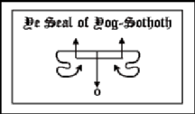

|
o Raise up Ye Stones

First thou shalt raise up ye four cardinal stones and these shall mark ye direction of ye four winds as they howleth through their seasons.
To ye North set ye the stone of Great Coldness that shall form ye Gate of ye winter-wind engraving thereupon the sigil of the Earth-Bull thus:{Taurus sigil} In ye South (at a space of five paces from ye stone of ye North), thou shalt raise a stone of fierce-heat, through which ye summer winds bloweth and make upon ye stone ye mark of ye Lion-serpent thus:{Leo Sigil} Ye stone of whirling-air shall be set in ye East where ye first equinox riseth and shall be graven with ye sign of he that beareth ye waters, thus:{Aquarius Sigil} Ye Gate of Rushing Torrents thou cause to beat the west most inner point (at a space of five paces from ye stone of ye East) where ye sun dieth in ye evening and ye cycle of night returns. Blazon ye stone with ye character of ye Scorpion whose tail reacheth unto the stars:{Scorpio Sigil} Set thou the seven stones of Those that wander ye heavens, without ye inner four and through their diverse influences shall ye focus of power be established. In ye North beyond the stone of Great Coldness set ye first ye stone of Saturn at a space of three paces. This being done proceed thou widdershins placing at like distances apart ye stones of Jupiter, Mercury, Mars, Venus, Sul and Luna marking each with their rightful sign.  At ye center of the so completed configuration set ye the Alter of ye Great Old Ones and seal it with ye symbol of Yog-Sothoth and ye mighty Names of Azathoth, Cthulhu, Hastur, Shub-Niggurath and Nyarlathotep. And ye stones shall be ye Gates through which thou shalt call Them forth from Outside man's time and space. Entreat ye of ye stones by night and when the Moon decreasetth in her light, turning thy face to ye direction of Their coming, speaking ye words and making ye gestures that bringeth forth ye Old Ones and causeth Them to walk once more ye Earth.
|
 o form ye Gate
through which They from ye Outer Void might manifest thou must set up ye
stones in ye elevenfold configuration.
o form ye Gate
through which They from ye Outer Void might manifest thou must set up ye
stones in ye elevenfold configuration.
 Ye Times and Ye
Seasons.. Ye Times and Ye
Seasons.. |
Adjuration
of Great Cthulhu<  |